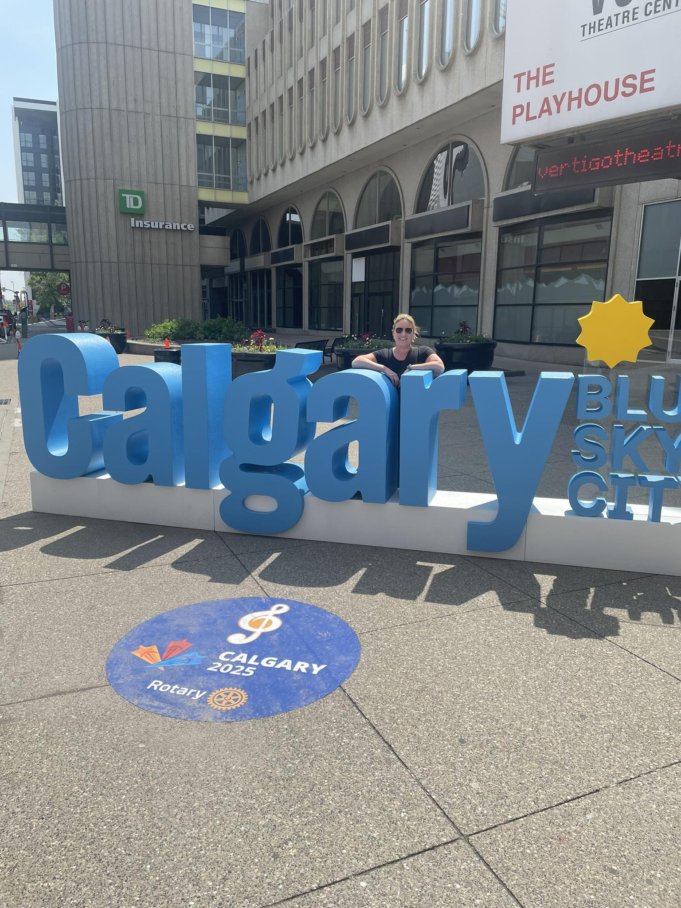
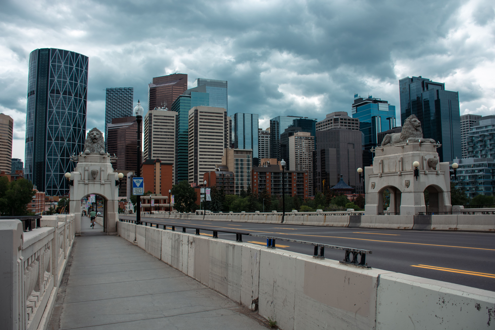
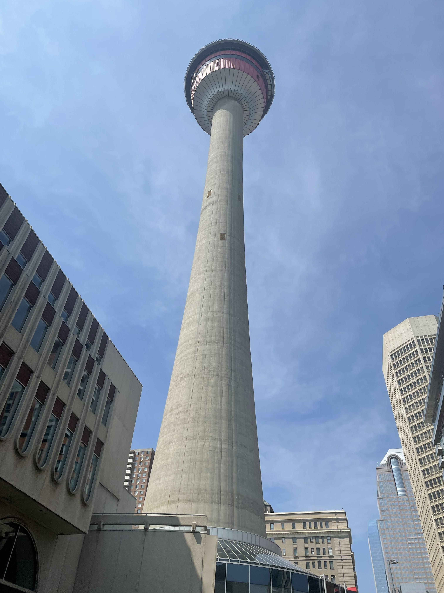
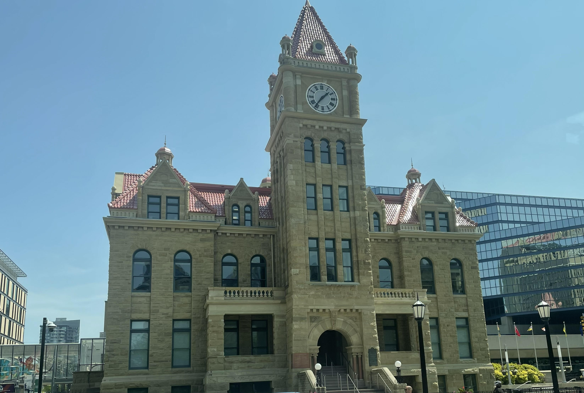
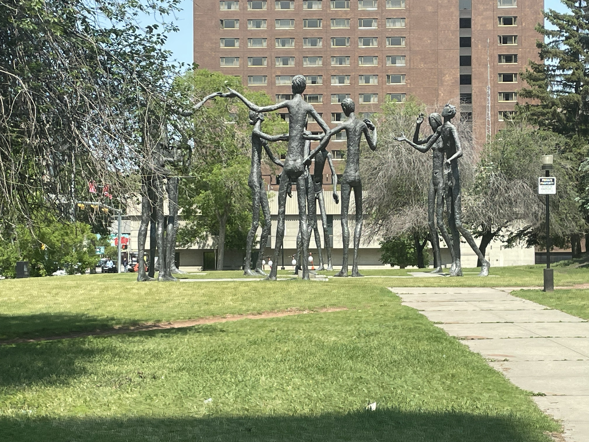
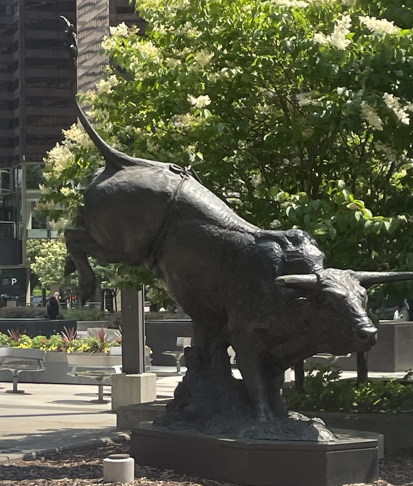
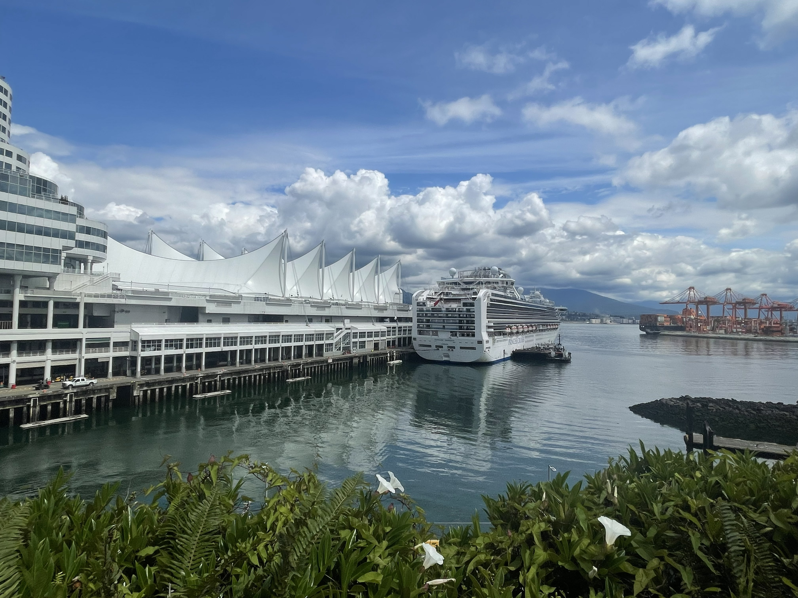
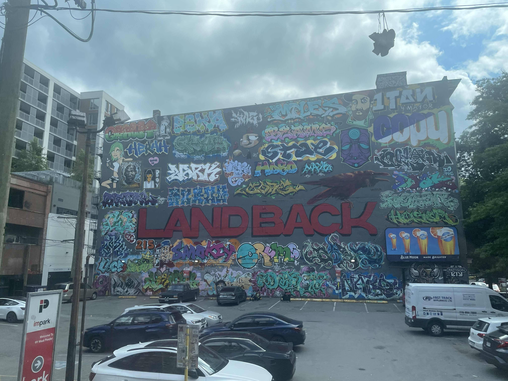
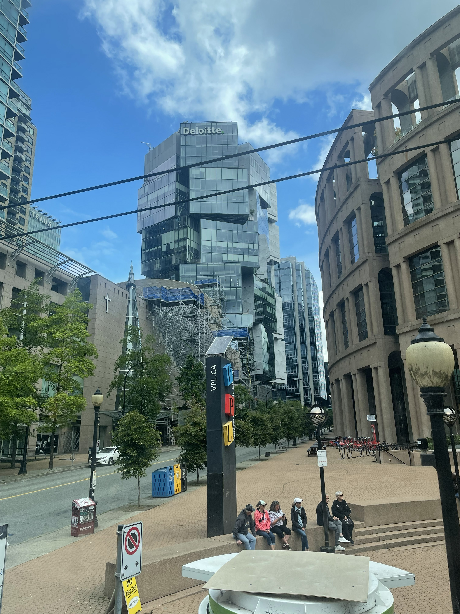
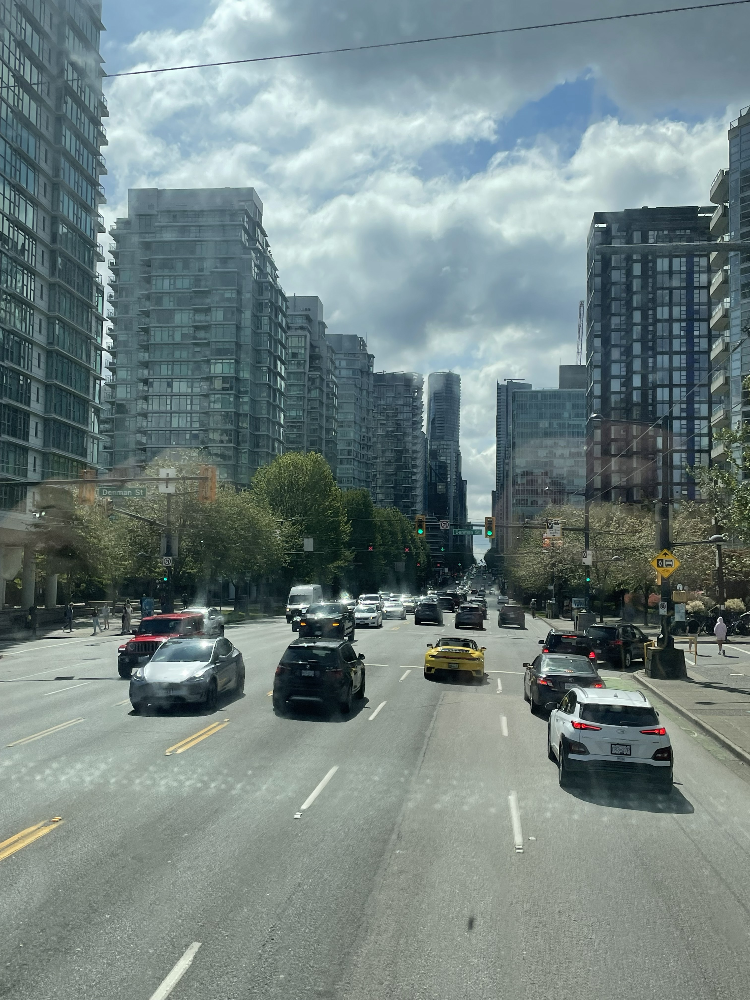

Canada — the trip that made us
fall completely in love with it
In 2024 we did what we reckon is one of the greatest trips on earth — flying into Calgary for the world-famous Stampede, heading deep into the Canadian Rockies on a guided tour through Yoho, Banff and Jasper, standing beside those ridiculous turquoise lakes, visiting the Columbia Icefield, and finishing in Vancouver before boarding an Alaskan cruise. It was big, bold, beautiful Canada — and we would do it all again in a heartbeat.
What to pack for Canada
Canada packing essentials — what we'd bring
From Calgary and the Rockies to Vancouver and Alaska, Canada throws a little bit of everything at you: sunshine, rain, cold mountain air, long driving days and endless photo stops. These are the things we'd genuinely pack again.
The Rockies and Vancouver both get wet. A proper waterproof set is essential — especially for the Icefields Parkway, waterfalls and glacier stops.
View on Amazon →Non-negotiable for the Rockies. Even if you are not doing major hikes, the viewpoints, lakes and waterfall paths are much easier with proper footwear.
View on Amazon →A quick spray before you travel keeps your boots performing at their best. Small, light and well worth packing.
View on Amazon →Great for cold mountain mornings, glacier stops and any time the weather suddenly turns. Temperatures can drop fast at altitude.
View on Amazon →You'll be taking photos constantly — at the lakes, waterfalls, glacier stops and on the seaplane. Keep your phone protected from rain and splashes.
View on Amazon →Wildlife spotting in the Rockies is extraordinary — elk, moose, bears, bighorn sheep. Binoculars make the whole experience so much better.
View on Amazon →Signal can be patchy in the national parks. An eSIM gives you data without roaming charges and makes city days easier too.
View on Amazon →A reusable bottle saves money and plastic — and keeps you hydrated on long driving days and city exploring days.
View on Amazon →When you're hours from the nearest town in the Rockies, a compact first aid kit is just sensible. Blisters, cuts, headaches — covers all the basics.
View on Amazon →Perfect for day trips, seaplane days, cruise excursions and quick Rockies stops. Keeps your waterproofs, snacks, camera and water close.
View on Amazon →Long driving days and full days on excursions drain your phone fast. A power bank means you never miss a photo because your battery died.
View on Amazon →Canada uses Type A and B plugs — different to Ireland. Don't get caught on day one with nothing charged.
View on Amazon →Disclosure: These are Amazon affiliate links. If you buy through them we may earn a small commission at no extra cost to you. These are all things we'd genuinely pack for a Canada trip.
Stop 1 — Calgary
Calgary — where the adventure begins
Calgary is the gateway to the Canadian Rockies and a brilliant city in its own right. The skyline is stunning, the people are some of the friendliest we've encountered anywhere, and the food scene is seriously underrated. But the real reason to time your Canada trip for early July is simple — the Calgary Stampede.
The Stampede is genuinely one of the greatest events on earth. Ten days of world-class rodeo, chuckwagon racing, incredible live music, insane fairground rides, and an atmosphere that's completely unique. Every single person in the city gets involved — Stetsons on, boots out, party on. We absolutely loved every second of it.
Beyond the Stampede, Calgary itself is worth a couple of days. We did a sightseeing tour of the city which gave us a brilliant overview before we headed into the mountains.
Calgary — our photos






Book a Calgary sightseeing tour
A city tour is the perfect way to get your bearings before heading into the mountains. It gives you a feel for Calgary before the Rockies completely steal the show.
Disclosure: If you book through this link we may earn a small commission at no extra cost to you.
Stop 2 — Yoho, Banff, Jasper and the Icefields Parkway
The Canadian Rockies — nothing prepares you for it
Between us we've been to 57 countries. We've seen mountains in New Zealand, Norway, Nepal and Switzerland. And the Canadian Rockies still stopped us in our tracks.
We did a guided 3-day Canadian Rockies tour from Calgary, which was ideal for seeing a huge amount without having to plan every transfer, viewpoint and hotel ourselves. In three days we covered Lake Louise, Moraine Lake, Natural Bridge, Emerald Lake, Bow Lake, the Icefields Parkway, Columbia Icefield, Athabasca Falls, Jasper, Maligne Lake, Maligne Canyon, Peyto Lake and Crowfoot Glacier.
It was full-on — in the best possible way. Lots of short scenic stops, lots of hopping on and off, and the kind of views where everyone on the bus goes quiet because the scenery is doing all the talking. If you want a compact Rockies itinerary that still delivers the big bucket-list names, this route is a cracker.
The famous turquoise glacial lake backed by the Victoria Glacier. Even when busy, it is still jaw-dropping.
Set in the Valley of the Ten Peaks, with water so blue it almost looks fake. One of the most beautiful places we have ever seen.
Natural Bridge, Emerald Lake and mountain scenery that feels wild, dramatic and slightly less hectic than the biggest Banff stops.
One of the world's great scenic drives — glaciers, waterfalls, lakes and huge mountain views for mile after mile.
A huge highlight of the trip, with the option to do the Ice Explorer and Columbia Icefield Skywalk.
Quieter and more relaxed than Banff, with beautiful scenery and access to Maligne Lake and Maligne Canyon.
Our Rockies itinerary — what we actually did
This was the route we followed on our Canadian Rockies tour. It is a brilliant option if you want the big-name lakes, the drama of Yoho National Park, a night in Banff, a night in Jasper, and the Icefields Parkway without renting a car.
Day 1 — Calgary to Yoho National Park, Lake Louise and Moraine Lake
- Lake LouiseThe big one. Named after Princess Louise Caroline Alberta, this is one of the most photographed lakes in Canada and a gorgeous first major stop in the Rockies.
- Moraine LakeThat vivid turquoise water, the Valley of the Ten Peaks behind it, and scenery that genuinely looks edited. We could have stayed here all day.
- Natural BridgeA short but powerful stop in Yoho National Park, where rushing water has carved through the rock and created a natural stone bridge.
- Emerald LakeThe largest lake in Yoho National Park, surrounded by towering peaks and that unbelievable glacial colour. A gorgeous photo stop.
- Lower Spiral Tunnels ViewpointA clever railway engineering stop where the train line loops through spiral tunnels to handle the steep mountain grade.
Overnight: Banff town core hotel, such as Banff Aspen Lodge or similar. Meals not included.
Day 2 — Bow Lake, Columbia Icefield, Athabasca Falls and Jasper
- Bow LakeA beautiful glacier-fed lake and the headwaters of the Bow River. It was one of those quick stops where the view hits you immediately.
- Icefields ParkwayThis is not just a road — it is one of the great scenic drives in the world. Glaciers, lakes, waterfalls and huge mountain walls all the way along.
- Columbia Icefield Discovery CentreA major Rockies highlight. From here you can choose optional experiences such as the Ice Explorer onto the Athabasca Glacier and the Columbia Icefield Skywalk.
- Athabasca FallsNot the tallest waterfall, but the force of the water is incredible. A dramatic, noisy, powerful stop before reaching Jasper.
- Jasper TownThe heart of Jasper National Park and a calmer contrast to Banff. We loved getting a taste of this quieter side of the Rockies.
Overnight: Jasper town hotel, such as Whistlers Inn Hotel, Lobstick Lodge or similar. Breakfast included.
Day 3 — Maligne Lake, Maligne Canyon, Peyto Lake, Crowfoot Glacier and back to Calgary
- Maligne LakeThe largest natural lake in the Canadian Rockies, with the option to take a scenic cruise. Even without the cruise, the setting is gorgeous.
- Maligne CanyonA dramatic limestone canyon shaped over millions of years. A brilliant stop for seeing just how powerful water and time can be.
- Medicine LakeA fascinating pass-by stop, known for its disappearing water system and underground drainage.
- Peyto LakeAnother glacier-fed lake with an unreal turquoise colour caused by glacial rock flour. One of the best viewpoints of the whole trip.
- Crowfoot GlacierNamed for its shape, and a sobering stop too because the glacier has visibly changed over time. A must-see on the route back.
Book a Canadian Rockies tour from Calgary
This style of tour is ideal if you want to see Yoho, Banff, Jasper, Lake Louise, Moraine Lake, the Columbia Icefield and the Icefields Parkway without hiring a car or planning every stop yourself.
Disclosure: If you book through this link we may earn a small commission at no extra cost to you.
Optional add-on — walking on a glacier
The Icefield Explorer — walking on the Athabasca Glacier
The Columbia Icefield was one of the most extraordinary stops of the entire Rockies section of the trip. From the Discovery Centre, you can book the Ice Explorer experience, where a specially designed vehicle takes you out onto the Athabasca Glacier so you can actually step out onto the ice.
Standing on a glacier, surrounded by mountains, with the ice crunching under your feet, is one of those travel moments that really makes you pause. If you are already travelling the Icefields Parkway, this is the optional experience we would seriously consider adding.
Our Icefield Explorer reel — watch before you book!
Book the Icefield Explorer or Columbia Icefield experience
Disclosure: If you book through this link we may earn a small commission at no extra cost to you.
The most beautiful water you've ever seen
The Lakes of the Canadian Rockies — genuinely unreal
Nothing prepares you for the colour of the lakes in the Canadian Rockies. The turquoise and jade hues come from glacial rock flour suspended in the water — and no filter, no camera setting, no photo does it justice.
On this trip we saw Lake Louise, Moraine Lake, Emerald Lake, Bow Lake, Maligne Lake and Peyto Lake. Lake Louise and Moraine Lake are the famous ones, and yes, they are every bit as beautiful as people say. But Peyto Lake and Emerald Lake were serious standouts too — especially if you love that ridiculous glacial-blue colour.
This is why a guided Rockies itinerary worked so well for us: it packed so many lake stops into a short space of time without us having to worry about parking, timings, road conditions or getting from one national park to another.
The Lakes of the Canadian Rockies — our reel
Stop 3 — Vancouver
Vancouver — the perfect end to a perfect trip
After the mountains, flying into Vancouver felt like landing in a completely different world. Glass towers, ocean views, mountains still visible on the horizon — it's one of the most visually striking cities on earth. We arrived a few days before our Alaskan cruise departed, which gave us just enough time to explore properly.
The highlight was the Panorama Seaplane tour — taking off from the downtown waterfront and flying over the city, Burrard Inlet and the surrounding mountains. One of the most spectacular things we've done anywhere in the world. We also did the hop-on hop-off bus, which was perfect for covering Vancouver's different neighbourhoods at our own pace.
Vancouver — our photos





✈️ The Panorama Seaplane tour — watch before you book
One of the most spectacular things we've done in 57 countries. Watch our reel and you'll understand why we'd recommend this to everyone visiting Vancouver.
Book the Panorama Seaplane tour
Disclosure: If you book through this link we may earn a small commission at no extra cost to you. This is the exact tour we did.
🚌 The Vancouver Hop-on Hop-off Bus
Perfect for covering Vancouver's neighbourhoods at your own pace — Gastown, Chinatown, Stanley Park, Granville Island and the waterfront. Hop off when something catches your eye, explore, then jump back on.
Disclosure: If you book through this link we may earn a small commission at no extra cost to you.
More things to do in Vancouver
Whale watching, Whistler day trips, Stanley Park tours, kayaking and more:
Disclosure: If you book through these links we may earn a small commission at no extra cost to you.
The finale — Alaska
Setting sail for Alaska — the perfect finale
Vancouver is one of the most popular embarkation points for Alaskan cruises — and once you arrive you immediately understand why. Sailing out of Vancouver Harbour with the city skyline behind you and the mountains ahead is a genuinely spectacular departure.
The Inside Passage route from Vancouver up through British Columbia and into Alaska is considered one of the great cruising routes in the world. Glaciers, whales, bald eagles, forested coastline and port towns with serious character — it is the kind of finale that makes the whole trip feel even bigger.
If you're already going to Vancouver — and you absolutely should be — seriously consider adding an Alaskan cruise onto the end of your trip. It turns a brilliant holiday into an extraordinary one.
Disclosure: If you book through our link we may earn a small commission at no extra cost to you.
Common questions
Canada trip FAQ
Ready to plan your Canada trip?
Whether you want the full Rockies experience, Lake Louise and Moraine Lake, the Columbia Icefield, a seaplane over Vancouver or all of the above — Canada is one of those trips that truly lives up to the hype.
Affiliate disclosure: if you book through our links we may earn a small commission at no cost to you. We only recommend experiences we've done ourselves and would book again.